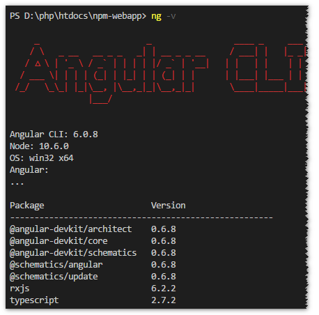
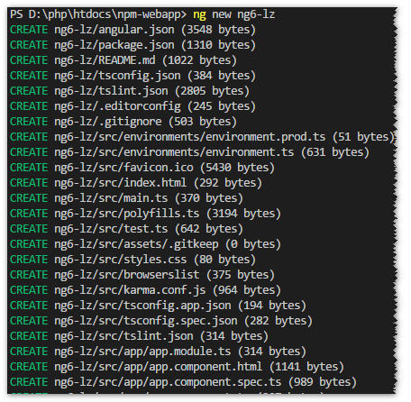

angular
2018-06-22
官网: https://angular.io/guide/quickstart
安装
首先安装node，安装方法跳转。
升级
卸载命令 npm uninstall -g @angular/cli 后
清楚缓存 npm cache clean -f
重装ng npm install -g @angular/cli
常用命令
安装angular cli
npm install -g @angular/cli
卸载angularcli
npm uninstall -g @angular/cli
清理缓存
npm cache clean -f
请卸载后到C:\Users\xxxxx\AppData\Roaming\npm目录下删除缓存文件。
快速清除依赖文件夹
npm install -g rimraf
rimraf node_modules
安装后查看angular脚手架版本
ng -v

新建ng项目
ng new 项目名

安装依赖
npm i
win7安装依赖时，若报python错误，可下载安装python后，重新安装依赖。
项目目录
启动项目
npm serve --open 或 ng serve
使用Angular CLI生成一个新组件
ng generate component 组件名
使用Angular CLI创建一个服务
ng generate service 服务名
上线前打包
ng build --prod